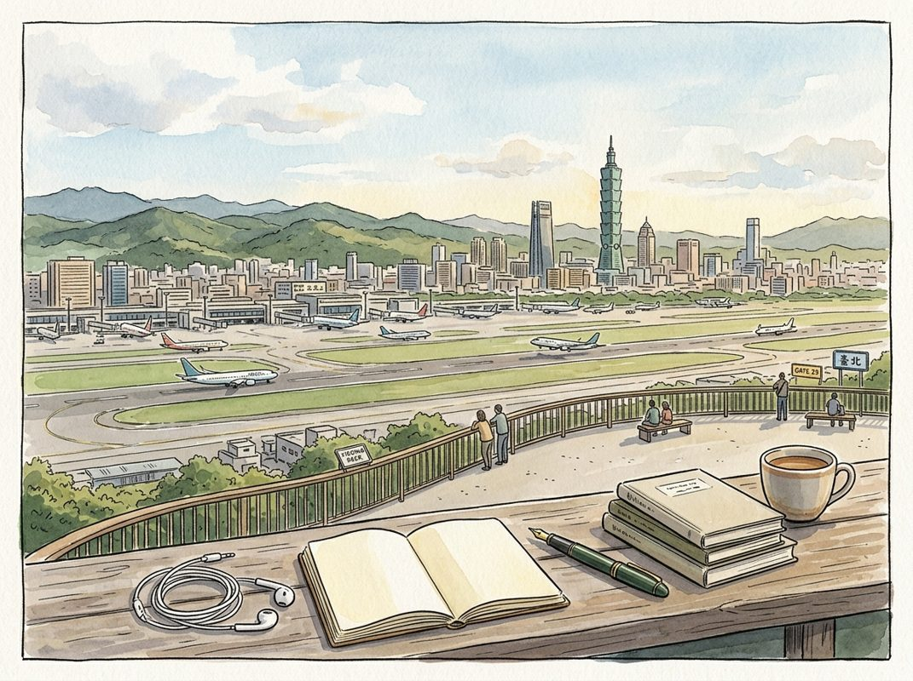

8/30

播客简报 2026-08-30
今日更新
Doug Leone on Sequoia, Fear, Great Founders & Starting Over at 69
来源：David-Senra
原链接：https://www.davidsenra.com/episode/doug-leone
状态：已读网页 transcript
这期播客深入探讨了红杉资本传奇投资人道格·莱昂（Doug Leone）的职业生涯和个人哲学。对于任何对风险投资、创业精神、领导力以及如何在快速变化的时代中保持相关性感兴趣的中文读者，这期节目都提供了宝贵的洞察。莱昂以其独特的视角，揭示了恐惧如何成为成功的动力，以及他如何不断重塑自我，在69岁高龄仍以“低级分析师”的心态拥抱AI革命。
- 恐惧：驱动莱昂不断重塑自我的核心动力：道格·莱昂，这位红杉资本的传奇人物，将他长达数十年的成功归因于一种深刻的不安全感和对“被淘汰”的恐惧。他坦言，每一次职业生涯的转型和自我重塑，并非源于远见卓识，而是出于对“消失”的恐惧。这种恐惧并非阻力，反而成为他前进的强大推力。即使在69岁高龄，重返红杉面对AI革命时，他仍感到“吓坏了”，并自称是“低级分析师”，愿意从零开始学习。他认为，要长期保持卓越，就必须放下自我，承认无知，并乐于从底层做起。这种将恐惧转化为动力的能力，是他跨越多个技术变革时代的关键。
- 投资哲学：只投“能改变基金命运”的极端异类：莱昂的投资决策基于三个核心问题：一、他是否愿意投入自己孩子的钱？二、如果一生只能做20笔投资，这笔是否是其中之一？三、这笔投资能否回报整个基金？他明确表示，只对能带来百倍回报的“极端异类”公司感兴趣。他指出，风险投资人最大的错误是过早出售赢家。红杉曾持有苹果、思科、谷歌和英伟达的巨额股份，但即使是最伟大的投资者也未能预见这些卓越公司能持续复合增长如此之久。他强调，如果能识别出少数几个具有无限市场潜力的公司并长期持有，便能创造惊人的财富。
- 投资人的角色：构建业务而非干预产品：莱昂认为，作为投资人，他的职责不是塑造创始人的技术或产品，而是帮助他们将产品转化为成功的业务。这包括协助组建早期团队、建立销售和营销体系、应对关键时刻，并确保创始人作为公司的灵魂得以保留。他欣赏那些“不敬、混蛋、不听话”的创始人，因为他们拥有清晰的愿景和强大的驱动力，不会轻易动摇。他相信，如果创始人需要他来帮助塑造产品，那公司就“完蛋了”。他的核心价值在于商业运营和战略层面，而非技术细节。
- 与创始人的深度合作：信任与直言不讳：莱昂分享了与几位创始人的合作经历。他曾是Nubank创始人大卫·贝莱斯（David Vélez）在红杉的导师，即使贝莱斯对金融服务一无所知，但莱昂看到了他“黄金般的心和狮子般的勇气”，并提供了关键的心理支持，最终帮助Nubank成长为一家价值数百亿美元的公司。他还提到ServiceNow的弗雷德·拉迪（Fred Luddy），其独特的“先讲缺点”的推介方式展现了极大的坦诚。莱昂特别欣赏以色列创始人，他们以坚韧、聪明、直接和高度信任著称，能进行高效且富有成效的对话，直指问题核心。
- 个人哲学：刻意制造“痛苦”与保持“接地气”：莱昂认为，为了保持驱动力，需要刻意在生活中注入一些“痛苦”或“磨难”，就像他建议对孩子那样。他自称内心是个“相当痛苦的灵魂”，总是有点不快乐，但这种“神圣的不满”正是他不断前进的动力。他通过放弃物质享受、重返工作岗位来制造这种“不适”。尽管取得了巨大成功，他仍努力保持“接地气”，没有私人助理，自己做家务，与蓝领朋友保持联系。他认为自己真正的技能是“嗅觉”（EQ），即理解他人想法、辨别商业潜力的能力。
历史精选
Microsoft Volume I
来源：Acquired
原链接：https://www.acquired.fm/episodes/microsoft
状态：已读网页 transcript
这期播客深入剖析了微软在个人电脑时代初期，如何从比尔·盖茨和保罗·艾伦的远见、技术实力、商业洞察力以及关键的运气中诞生，并开创了软件作为独立商业模式的先河。它适合所有对科技史、商业模式创新以及微软早期发展感兴趣的中文读者。
- 比尔·盖茨的独特成长背景与早期抱负：比尔·盖茨（Bill Gates III）于1955年出生于西雅图一个显赫的家庭。他的父亲老比尔·盖茨是当地著名的律师，联合创立了K&L Gates律师事务所；母亲玛丽·盖茨则是西北地区极具影响力的商界女性，曾任多家公司和非营利组织的董事。在这样的环境中，小盖茨从小耳濡目染商业对话，培养了非凡的竞争精神和对成功的渴望。13岁时，他在湖畔中学（Lakeside School）接触到DEC PDP-10大型机，与保罗·艾伦（Paul Allen）结识，并迅速展现出编程天赋。艾伦对摩尔定律的直觉洞察，即计算能力将呈指数级增长，让盖茨坚信“每张办公桌和每个家庭都将拥有一台电脑”的愿景，这在当时被认为是“疯言疯语”，却成为微软的北极星。
- 计算机时代的黎明：从大型机到微型机：在微软诞生之前，计算市场由IBM的System 360等大型机主导，它们是房间大小的机器，软硬件和服务高度捆绑。数字设备公司（DEC）的“迷你电脑”PDP系列，如壁橱大小的机器，通过更低的成本和更广泛的应用场景，对IBM构成了“低端颠覆”。1968年，IBM因反垄断压力被迫将软硬件服务拆分销售，无意中为未来独立的软件公司打开了大门。随着英特尔微处理器（如8008和8080）的出现，将整个计算机集成到单个芯片上的可能性浮现，预示着“微型计算机”时代的到来。盖茨和艾伦敏锐地捕捉到这一趋势，意识到这将彻底改变计算的普及方式。
- Traf-O-Data与BASIC的萌芽：微软前身：在湖畔中学，盖茨和艾伦与其他同学组建了“湖畔程序员小组”，通过为西雅图当地的计算机中心公司（C-Cubed）调试系统来换取免费的计算机时间，学习了Fortran、Lisp和机器语言。他们甚至得到了Spacewar游戏开发者史蒂夫·罗素的指导。随后，他们为一家分时计算公司编写了工资单程序，并由盖茨的父亲协助谈判，获得了基于软件收入的版税，而非简单的按时付费，这预示了软件商业模式的雏形。之后，他们创立了Traf-O-Data公司，尝试利用微处理器分析交通数据，虽然商业上未获巨大成功，但艾伦通过模拟器为英特尔8008芯片编写代码的经验，为日后微软BASIC的开发奠定了基础。
- Altair 8800的横空出世与微软的诞生：1974年，英特尔8080芯片的发布让盖茨和艾伦看到了通用微型计算机的潜力。1975年1月，艾伦在报摊上看到《大众电子》杂志封面上的Altair 8800——第一台商用微型计算机。尽管Altair没有屏幕或键盘，只有16个灯和16个开关，但其397美元的低价（得益于MITS创始人埃德·罗伯茨与英特尔谈判获得的75美元芯片价格）使其具备了大众市场的潜力。盖茨和艾伦立即致电MITS，谎称已开发出8080芯片的BASIC解释器。在获得演示机会后，艾伦在飞往新墨西哥州的飞机上紧急手写了引导加载程序。他们的BASIC解释器成功运行，震惊了罗伯茨，也标志着微软（Micro-Soft）的正式诞生，最初是盖茨和艾伦的合伙企业，盖茨占60%股份。
- 软件商业模式的探索与盗版困境：微软与MITS签订了独家授权协议，MITS获得BASIC解释器的独家销售权，微软每售出一份BASIC可获得30美元，并从MITS的转授权收入中获得50%，但总收入上限为18万美元。然而，MITS的销售策略与微软的利益存在巨大分歧：MITS不愿将BASIC转授权给潜在竞争对手，导致BASIC的销量远低于Altair电脑的销量。更严重的是，软件盗版问题首次浮出水面。在1970年代中期，软件的版权保护尚无法律依据，人们普遍认为复制软件是理所当然的。盖茨为此发表了著名的《致爱好者的公开信》，谴责盗版行为。这一困境促使盖茨意识到，软件不应作为独立商品由消费者购买，而应作为硬件的一部分，通过向硬件制造商收取版税来解决盗版问题和激励销售。
Agilent: Back To The Lab - [Business Breakdowns, EP.223]
来源：Business Breakdowns
原链接：https://joincolossus.com/episode/agilent-back-to-the-lab/
状态：已读网页 transcript
这期播客深入剖析了安捷伦（Agilent）这家从惠普剥离出来的实验室设备巨头，揭示了其如何通过独特的“剃刀与刀片”商业模式、持续创新和对生命科学前沿技术的把握，在1600亿美元的实验室设备市场中建立起强大护城河并实现稳健增长。对于关注B2B高科技制造、医疗健康投资以及企业转型与增长策略的听众，本期内容提供了宝贵的案例分析。
- 安捷伦的起源与核心业务：从惠普剥离的巨头：安捷伦（Agilent）是一家市值达300亿美元的实验室设备与仪器公司，其历史可追溯到25年前从惠普（Hewlett Packard）剥离。最初，安捷伦继承了惠普在测试测量领域的深厚技术积累，并逐步将重心聚焦于为生命科学、诊断、应用化学市场以及各类研发机构提供关键设备和解决方案。主持人Matt Reustle和嘉宾Marc de Vos指出，安捷伦的核心业务是销售高精度的实验室仪器，如色谱仪等，这些设备是现代科研和工业生产不可或缺的基础设施。公司在1600亿美元的全球实验室设备市场中占据主导地位，其产品广泛应用于药物研发、食品安全检测、环境监测等多个关键领域。
- “剃刀与刀片”模式：构建客户忠诚与持续收入：安捷伦成功的关键在于其独特的“剃刀与刀片”商业模式。Marc de Vos解释说，公司销售的实验室仪器（即“剃刀”）通常价格昂贵且技术复杂，一旦客户投入购买并集成到其工作流程中，便会产生极高的转换成本。更重要的是，这些仪器需要持续的耗材（如色谱柱、试剂）、软件更新、维护和技术支持（即“刀片”）。这些“刀片”业务不仅带来了稳定的经常性收入，而且由于耗材和服务的专有性，进一步锁定了客户，形成了强大的客户粘性。这种模式确保了安捷伦在设备售出后仍能持续从客户那里获得收入，并加深了与客户的长期合作关系，构筑了坚实的竞争壁垒。
- 产品与服务策略：技术领先与全面解决方案：安捷伦的产品策略强调技术领先和提供全面的解决方案。公司不仅提供顶级的分析仪器，还围绕这些仪器构建了完整的生态系统，包括配套的软件、耗材、服务和应用支持。例如，色谱技术是其核心竞争力之一，安捷伦通过不断创新，提升仪器的精度、速度和自动化水平。此外，公司还积极拓展诊断和病理学领域，提供从样本制备到数据分析的全流程解决方案。这种一站式服务模式，使得客户能够更高效地进行实验和研究，进一步巩固了安捷伦在市场中的领导地位，并使其能够更好地满足不同客户群体的多样化需求。
- 竞争格局与市场地位：深耕细分领域的护城河：在竞争激烈的实验室设备市场中，安捷伦通过深耕细分领域和技术创新，建立了难以逾越的护城河。Marc de Vos指出，安捷伦的竞争优势不仅体现在其产品的技术先进性上，更在于其与客户建立的长期信任关系和强大的服务网络。由于实验室仪器的专业性和高投入，客户在选择供应商时非常谨慎，一旦选定便倾向于长期合作。安捷伦凭借其卓越的产品质量、可靠的售后服务和持续的技术支持，赢得了全球众多科研机构、制药公司和政府实验室的青睐。这种深厚的客户基础和品牌声誉，使其在面对新进入者和现有竞争对手时，能够保持稳固的市场地位。
- 财务表现与增长驱动：稳健增长与新动能：安捷伦展现了稳健的财务表现和持续的增长潜力。公司通过“剃刀与刀片”模式确保了高利润率和稳定的现金流。在过去的几年里，安捷伦不仅实现了营收的持续增长，其盈利能力也得到了显著提升。播客中提到，除了传统业务的稳健发展，安捷伦还在积极探索新的增长点。其中，RNA技术被视为一个重要的转型驱动力。随着基因组学、蛋白质组学和细胞生物学研究的深入，对RNA分析的需求日益增长，安捷伦通过在该领域的投入和创新，成功抓住了这一新兴市场机遇，为其未来的增长注入了新的活力。